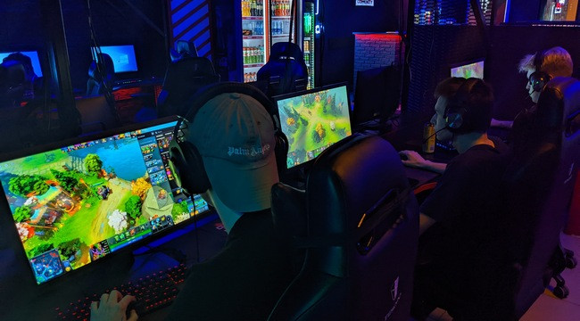

Киберспортивные дисциплины
В киберспорте существуют киберспортивные же дисциплины – их множество,
выделить все не представляется возможным.
Каждая дисциплина – это одноименная игра, в которой между собой сражаются
участники соревнований.

Приведем небольшой небольшой список
самых популярных, высокооплачиваемых и востребованных дисциплин.
Среди них: Counter-Strike: Global Offensive; Dota 2; Hearthstone; Overwatch; League of Legends;
FIFA; World of Tanks; StarCraf; PUBG; Call of Duty.
Четыре однозначно ведущие киберспортивные дисциплины, собирающие стадионы зрителей,
проходящие невероятно массово и зрилищно – это командные стратегии
League of Legends и
Dota 2,
новая модификация шутера
Counter Strike под названием
CS:GO и карточная игра
Hearthstone.
Киберспорт – это спорт, настоящий и официально зарегистрированный.
Поэтому он имеет определенные дисциплины – выделить все не удастся, но можно определить основные категории игр!
- Шутеры (Counter-Strike)
- Стратегии (Dota 2, StarCraft)
- Файтинги (Mortal Kombat)
- Симуляторы (FIFA, NBA2K)
Само понятие киберспорта не означает, что любая игра может стать дисциплиной – отнюдь.
По каким же критериям отбираются игры для внесения в список киберспортивных дисциплин?
Таких параметров несколько – рекомендуем обратить внимание:
- Определенные правила и цель;
- Факт соревновательности – между командами или игроками по отдельности;
- Существование игровой механики – нужно сделать определенные действия, чтобы получить определенный результат;
- Невозможность заплатить за упрощение игрового процесса.
Насколько успешной станет дисциплина, зависит от количества зрителей, профессиональных команд и проводимых соревнований.
Хотя конкуренция всегда была в основе видеоигр, только в прошлом десятилетии киберспорт действительно поразил нас. Конечно,
в 1990-х и 2000-х годах были крупные соревнования для таких игр, как Starcraft, Quake, Halo и т. д., Однако колоссальный
взлет киберспорта случился сравнительно недавно, в 2010-х годах.
За последние 10 лет конкурентоспособность киберспорта взлетела до таких высот, которых мы не видели ранее. Становясь ближе
к большому киберспорту, он соответствует общей привлекательности видеоигр, в целом, что также оставило свой след в мировой культуре в последние 10 лет.
Ушли в прошлое случайные турниры, протекавшие в локальных рамках. По большей части благодаря деньгам и стримингу, в игры не
только играют, но и смотрят их.